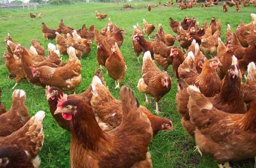
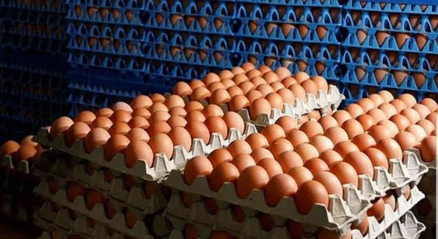

¿Qué hacemos?
 Producción Local de Huevos
Situada en el corazón de la región rural de Santa Rosa, en la Zona Este de Mendoza, nuestra granja avícola "Frutos del Nido" es un punto de referencia en la localidad en lo que refiere a la producción de huevos frescos y de alta calidad. Especializados en la cría de gallinas ponedoras, nuestra granja se distingue por su enfoque en la eficiencia y la excelencia operativa.
En "Frutos del Nido", seguimos rigurosos estándares de higiene y seguridad alimentaria para garantizar la pureza y frescura de cada huevo que producimos. Nuestro equipo se esfuerza día a día en mejorar para obtener una producción de huevos en un entorno de alta higiene y responsabilidad con los animales criados en la granja.
Diversificamos nuestra producción, teniendo huevos marrones y blancos, siempre intentando adaptarnos a las necesidades y preferencias de nuestros clientes. Ya sea para su uso en la cocina doméstica o en la industria alimentaria, nuestros huevos son la elección ideal para aquellos que buscan calidad y consistencia en cada compra. Somos convencidos de las altísimas capacidades del huevo de gallina como alimento, gracias a sus increíbles propiedades nutritivas, su versátil uso en la industria alimenticia y la sumamente amplia gama de usos culinarios que posee.
En "Frutos del Nido", nuestra pasión por la excelencia impulsa cada aspecto de nuestra operación, desde la alimentación de nuestras aves hasta el envasado y la distribución de nuestros productos.
Descubra el sabor y la calidad superiores de los huevos de "Frutos del Nido". ¡Le garantizamos una experiencia inigualable en cada comida!
Producción de Balanceados para Animales de Granja
En nuestro corralón tenemos disponible para la venta variados alimentos balanceados, destinados a todo tipo de producción animal agrícola. De la mano de excelentes profesionales y grandes marcas de la nutrición animal, preparamos alimentos balanceados con formulados óptimos que aseguran los mejores rendimientos y el mejor bienestar para sus animales.
- Balanceados para Gallinas Ponedoras, destinado a la obtención de un huevo de excelente tamaño, color y sabor. Receta adaptada a la época adecuada y pensado para razas de buena genética con alto índice de postura.
- Balanceados para Pollos Parrilleros, destinado a pollos de carne de rápido crecimiento, permite la obtención de un sabroso pollo parrillero en menos de dos meses con una excelente carne y sin alto contenido graso.
- Balanceados para Cerdos en todas sus edades y etapas. Acompañando a las cerdas madres en las étapas más críticas, como son la gestación y la lactancia, ayudando a los lechones a salir de destete de manera rápida y sin dificultad, y finalmente ayudando a la terminación y mantenimiento de cerdos adultos. Estos balanceados están pensados para la obtención de excelentes lechones y capones, obteniendo en ambos casos excelentes carnes con poca grasa, y con un rendimientos excelente al compararlo con otras alternativas alimenticias menos equilibradas.
- Mezclas para el engorde de Rumiantes en general (Bovinos, Ovinos y Caprinos), pensadas para ayudar y acompañar el engorde de estos animales a la par de un suministro constante de forrajes verdes secos.
- Selecta variedad de balanceados para conejos (marca Conecar), alimentos balanceados para mascotas adultas (Molinos Nutride y Metrive)